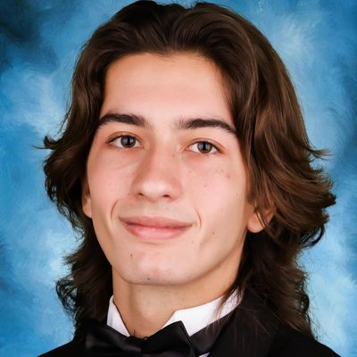
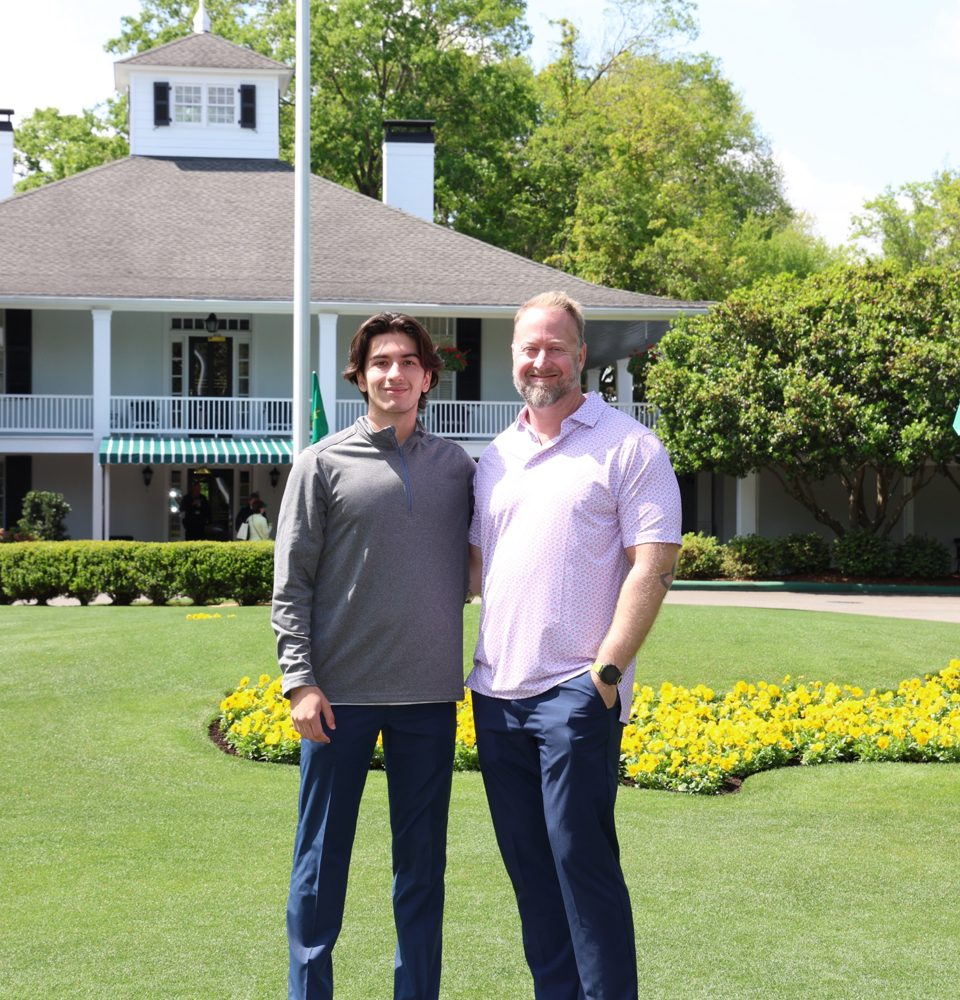

Cybersecurity student at USF graduating December 2027, looking for a cybersecurity internship for summer 2027, mainly in SOC and threat detection.
I'm a junior at the University of South Florida's Bellini College of Artificial Intelligence, Cybersecurity, and Computing, with a 3.82 GPA and Dean's List recognition. I'm in the ReliaQuest Security Operations Labs program this fall, I'm studying for Security+, and I go to Whitehatters, USF's security club. I'm also in Delta Tau Delta, where I've been Finance Chair.
Highlights:
Ran my own captured ping and Nmap traffic through Suricata, wrote a simple custom rule, and sorted the real alerts from a capture artifact.
Python script that counts failed SSH logins per IP in auth.log and flags any IP with 10 or more.
AWS Academy lab: a VPC with public and private subnets in two Availability Zones, and a web server behind a security group that only allows HTTP.
Python script that saves SHA-256 hashes of a folder and reports added, changed, and deleted files on the next scan.
Write-ups of Hack The Box machines and Academy modules, covering web exploitation, Metasploit, and password attacks.

Outside of cybersecurity, I've played sports my whole life, and that team mindset led me to join Delta Tau Delta and become part of a great brotherhood. On most days you can find me in the gym or hanging out with friends and family.